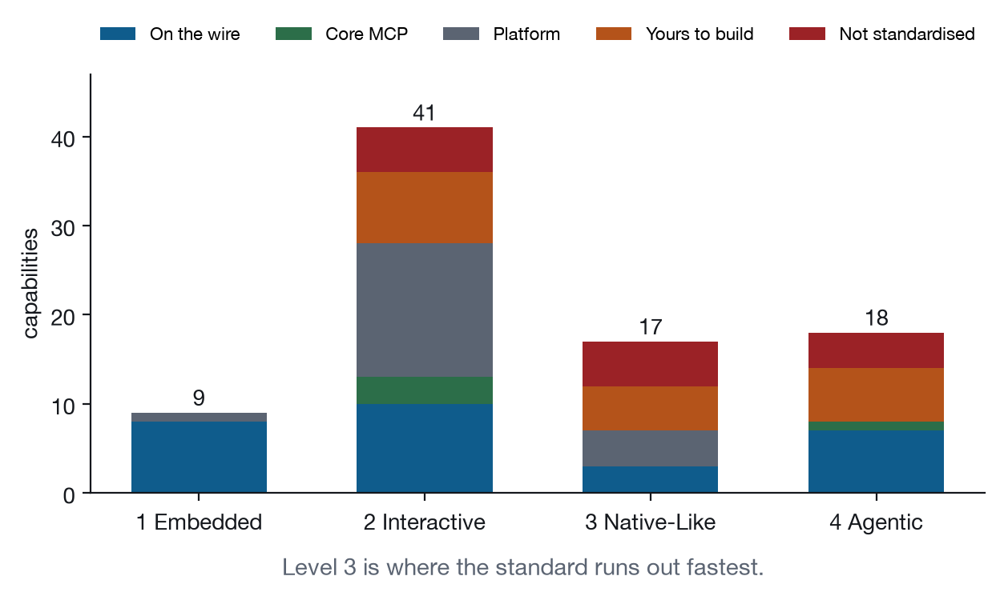

Chapter 27
The Coverage Matrix and the Checklists
What eighty-five capabilities by thirteen recipes actually shows, why the matrix is generated rather than maintained, and what a host is claiming when it claims a level.
Two artifacts come out of the registry on every build, and both are more useful as diagnostics of the book than as references for the reader.
The matrix
Appendix A carries the full capability by recipe matrix. It is generated from the registry, never hand-maintained, and reading down a column tells you what a recipe needs while reading across a row tells you how well covered a capability is.
The interesting entries are the extremes.
Rows with no marks at all. A capability that no recipe exercises is a capability this book has described and not demonstrated. There are several, and they cluster: op.pause, system.print, and the environment signals that have no visible consequence in a small view. Each is either genuinely rare or a recipe that should exist and does not.
Rows with a mark everywhere. surface.resize, env.theme and host.capabilities are in every recipe, which is what “Level 1” means in practice. If a host gets those three wrong, nothing in Part V renders.
Columns that are unusually short. A recipe that touches few capabilities is either focused or thin. Recipe 5’s column is short and it is focused; Recipe 2’s is short and could carry more.
The delta diagonal. Reading the deltas in order shows the book’s argument as a shape: the first recipe claims sixteen capabilities, and by the thirteenth the deltas are down to a handful each. That taper is the evidence for the completeness claim. If the thirteenth recipe still needed six new primitives, the model would not be converging.
Why generated rather than maintained
A hand-maintained matrix is wrong within a week and nobody notices, because nothing reads it. A generated one is wrong only if the registry is wrong, and the registry is what everything else reads.
The generation also enables checks that a document cannot make. The build reports capabilities with no entry in any chapter, which is how the missing tool.cancel entry in Chapter 19 was found. It could equally fail on a Core capability with no covering recipe, which is the check a mature version of this suite would run in CI.

What a level claim means
Appendix C turns each level into a checklist of observable behaviours. The translation from capability to check is mechanical, and the phrasing is deliberately in the form an assertion takes.
A host claiming Level 1 is claiming that a view renders, that ui/notifications/size-changed resizes the frame, that hostContext carries a theme and a locale, that ui/open-link works or is honestly absent from hostCapabilities, and that ui/initialize returns a capability set that matches what the host will actually do.
That last clause is the one that fails most often, and it is worth stating as its own rule. A capability advertised and not implemented is worse than one that was never advertised. The whole progressive enhancement discipline in Chapter 1 depends on the handshake being truthful. A host that advertises downloadFile and then does nothing when a view sends ui/download-file has broken every view that checked properly, and rewarded every view that did not check at all.
Level 2 adds the interactive set, and the checks are mostly about the host staying out of the way: that keyboard events reach the frame, that the frame’s focus ring is not clipped by host styling, that a context menu inside the frame is not shadowed by the host’s own.
Level 3 is where hosts diverge most. Display modes, lifecycle signals, and the persistence gap all live here, and a host can be excellent at Levels 1 and 2 while implementing none of Level 3. That is a legitimate position for a host whose views are all cards.
Level 4 is the agentic set, and it has the largest gap between what the checklist asks and what the specification provides. Nine Core capabilities across all levels have no standard mechanism, and Appendix C marks each of them, because a checklist that asked hosts to implement something unspecified would be worthless.
Reading the checklist as a host implementer
The useful order is not top to bottom. It is:
Get the handshake truthful. Everything else in the book assumes it.
Get surface.resize right, including the zero-height case on first render. More views look broken because of this than because of anything else.
Get ui/resource-teardown right, including waiting for the response. This is the only data-loss bug in the protocol, and views cannot work around a host that does not wait.
Then work down the levels in order, and publish which one you pass.
Reading the checklist as an application author
The order is different. Assume Level 1, check for everything above it, and make the check the thing that decides whether a control exists.
Then use the failure column of the recipe entries in Part V as a design prompt. Every one of those tables was written by asking, for each capability, what the application looks like without it. That exercise takes an hour and produces most of the progressive enhancement work you were going to do anyway, before the code makes it expensive.
The matrix as an argument
One last use. The matrix is the closest thing this book has to a proof, and it is not one. What it shows is that thirteen recognisable applications were built from eighty-five named primitives, that the primitives were sufficient for all thirteen, and that fourteen of them had to be worked around because no mechanism exists.
That is evidence for the completeness test in Chapter 25 and not an answer to it. The answer needs Layer 5 from Chapter 26: the same recipes, unmodified, running in hosts that were not built alongside them.